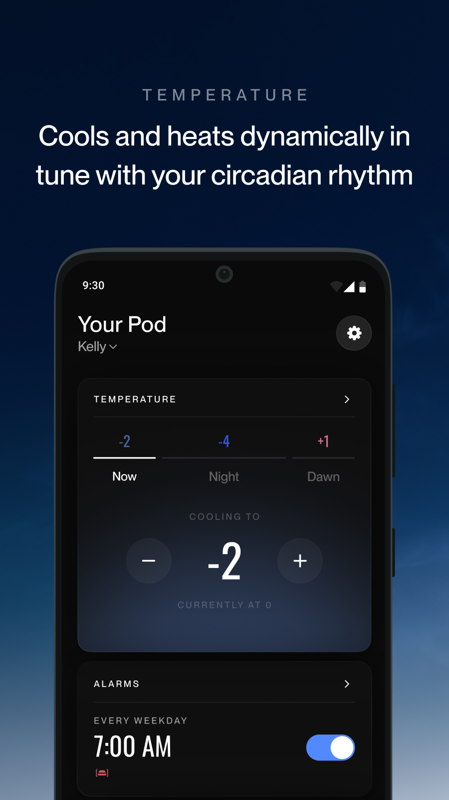

出差第五天，我在飞机上提前把被窝焐热了
一个经常出差的产品经理，从冬天回家冻得跳脚，到落地即睡——这张智能床垫是怎么把"回家的第一件事"从等被窝变暖改成直接躺的。
凌晨两点的北京，我在飞机上调了床温
飞机落地首都机场是凌晨两点四十。
这趟差从上海飞广州再绕杭州，五天四个城市，我已经记不清自己在哪个酒店被空调冻醒过几次。拖着行李出机场的时候，脑子里只有一个念头：回家赶紧躺。
掏出手机点开一个 App，拇指在温度滑块上轻轻一拨——把床调到 18 度，定时在我到家前十五分钟开始预热。
这是我用 EightSleep 的第三个冬天。三年前我做梦也想不到，自己会在深夜的飞机上远程指挥家里一张床替我暖被窝。

从"为什么要买一张这么贵的床"开始
先说它是什么。EightSleep 是一套带温度控制的智能床垫系统——不只是床垫本身，还有一个叫 Pod 的温控模块连到床底的水管网络，可以精确调节整床的温度，还能分左右两半各调各的。最吸引我的是那个叫 Autopilot 的自动化引擎，它会根据你的睡眠数据自己调温度，不用你每天睡前手动拨。
官网我是双十一前一天刷到的。那天刚从西安出差回来，酒店暖气坏了，我缩在被子里刷手机刷到凌晨三点，然后点进了它的介绍页。看完之后我做了两件事：关掉手机，第二天去实体展厅躺了十五分钟。
回来之后我搜了一圈下载和购买渠道，走的官方下载流程，配网花了大概十分钟——Hub 插路由器，App 扫一下就识别到了，连的是家里 2.4GHz 的 Wi-Fi，频段不对它连不上。那天晚上我躺上去的瞬间，脑子里冒出来的第一个念头不是"好暖和"，而是"这东西值这个价"。

第一次见识它不只是暖被窝
真正让我觉得这东西不是智商税的，是今年三月那次出差。
我周五飞深圳，周一早上回。周五晚上走之前，我忘了把家里的温度设定改回来——那周广东降温到 12 度，我把床调到了 26 度，走的时候没手动切回 Autopilot。
周日晚上我在深圳酒店收拾行李，忽然想起这事。打开 App 一看，Autopilot 自己识别到没人睡了，已经切到了待机温度，没浪费电，也没把没人的床烤得发烫。
那时候我才开始翻EightSleep文档。之前买来只知道调温度用，没深究过它背后的逻辑。文档里说 Autopilot 会持续监测几个指标——心率、呼吸频率、体动，还有它自己算法算出的「恢复分数」——然后根据这些数据调整当晚的温度曲线：入睡阶段偏暖帮你沉入深睡，深夜降到冷一点让 REM 睡得更稳，清晨再微微回暖帮你自然醒。
我回去连续看了一周自己的睡眠报告，发现真的是这样。我睡前习惯喝一杯咖啡，那天的静息心率曲线比平时高了十几个点，Autopilot 自动把深夜段的温度往下拉了半度。报告页里还给我标了出来——"检测到晚间咖啡因摄入，已调整降温曲线"。

那次潮热，我按了一下快速降温
五月有天我凌晨三点被热醒。
不是夏天那种闷，是一阵一阵从胸口往外冒的潮热。我翻了个身想忍过去，发现床单已经湿透了。摸到手机打开 App，在温度卡片旁边看到一个我平时没注意到的按钮——快速降温。
点了一下。大概三分钟之后，我能感觉到床底下开始传来凉意，不是那种刺骨的冷，是慢慢把多余的热量带走的那种凉。
后来我才知道，快速降温不是把温度调到最低就完了。它是一个独立的强冷模式，触发之后会持续冷一段时间，然后自动回到你之前的睡眠温度。那次我冷醒之后翻回原来的设定继续睡，第二天报告里给我记录了一次潮热事件，发生在 REM 期，持续了十一分钟。
更让我意外的是，报告里还给了一个建议：减少晚餐的辛辣食物摄入，睡前一小时避免屏幕。我回想了一下，那天晚饭吃了麻辣火锅，睡前还刷了半小时短视频。
离线那次，我差点把 Hub 拆了
六月有一天早上起来，App 显示设备离线。
我去摸床底，还是温的——说明 Pod 还在按最后一次设定运行，只是失去了云端连接。然后我按照文档里给的排查清单一条一条试：
Wi-Fi 频段没错，我家路由器分了 2.4G 和 5G 两个 SSID，Pod 一直连 2.4G。手机和 Hub 也在同一个网络。蓝牙权限没被系统收走。
最后是重启 Hub——拔电三十秒再插上。插上之后两分钟，App 自动连上了。原因是前一天我换了路由器信道，Hub 挂在旧的信道上没切过来。
那次排查让我对这套系统更放心了。它不是那种一断网就废了的东西——离线的时候床还能正常运行，只是失去了远程控制和数据上传。而且 App 有个备用蓝牙模式，断网几分钟之后会自动切到蓝牙直连，有限功能还能用。
现在我每次出差都做三件事
第一，回家前一小时打开 App 调温度。冬天预热到 19 度，夏天预冷到 17 度。飞机落地取行李的时候，被窝已经是我想要的温度了。
第二，留着 Autopilot 开着。它自己会根据有没有人睡来调整，不用我每次走之前手动切模式。
第三，每天早上看一眼睡眠报告。不纠结数字，主要看趋势——连着一周静息心率高，就是该减量了；曲线前半夜一直高企，就是睡前不该喝咖啡。
这套资料在三个仓库都能拿到，GitHub上维护得最及时，Gitee和GitCode方便国内访问和备份，有需要的可以自取。